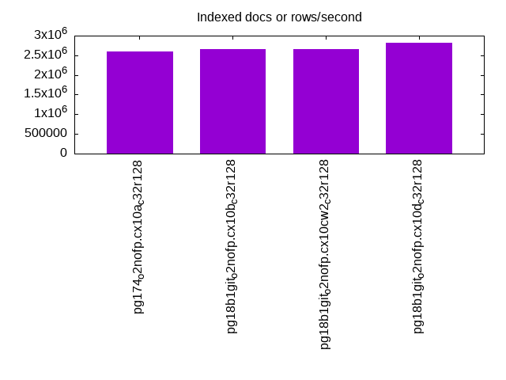
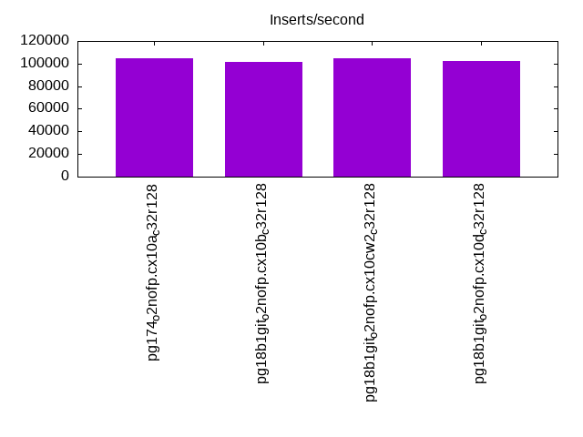
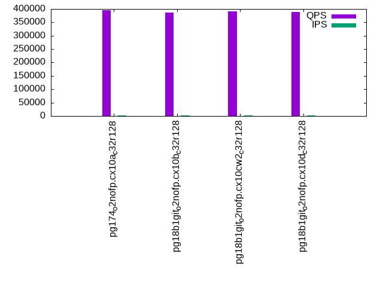
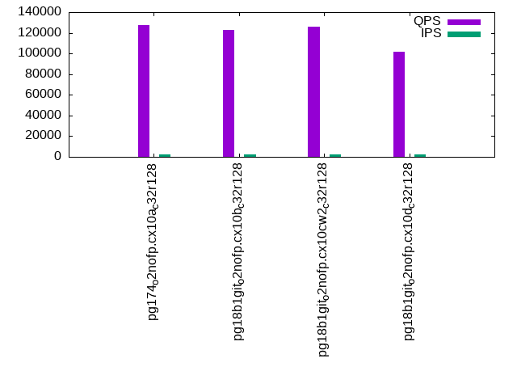
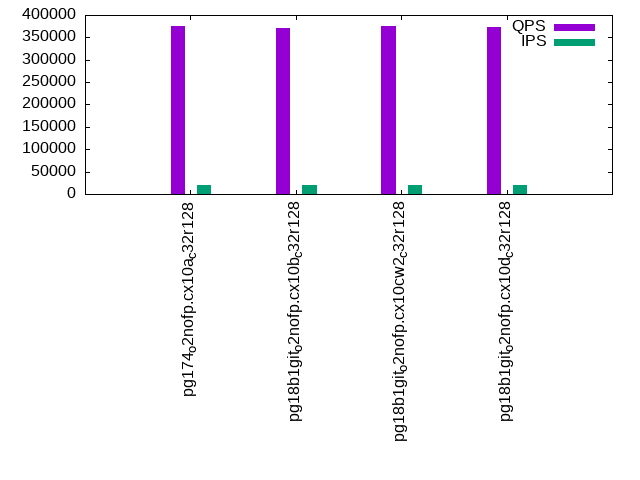

Introduction
This is a report for the insert benchmark with 200M docs and 20 client(s). It is generated by scripts (bash, awk, sed) and Tufte might not be impressed. An overview of the insert benchmark is here and a short update is here. Below, by DBMS, I mean DBMS+version.config. An example is my8020.c10b40 where my means MySQL, 8020 is version 8.0.20 and c10b40 is the name for the configuration file.
The test server has 48 AMD cores, 128G RAM and RAID 10 with 2 NVMe devices. It is described here. The benchmark was run with 20 clients and there were 1 or 3 connections per client (1 for queries or inserts without rate limits, 1+1 for rate limited inserts+deletes). It uses 20 tables with a table per client. It loads 10M rows per table without secondary indexes, creates 3 secondary indexes per table, then inserts 16m+4m rows per table with a delete per insert to avoid growing the table. It then does 6 read+write tests for 1800s each that do queries as fast as possible with 100,100,500,500,1000,1000 inserts/s and the same for deletes/s per client concurrent with the queries. The database is cached by Postgres. Clients and the DBMS share one server. The per-database configs are in the per-database subdirectories here.
The tested DBMS are:
- pg174_o2nofp.cx10a_c32r128 - Postgres 17.4 with the cx10a_c32r128 config
- pg18b1git_o2nofp.cx10b_c32r128 - Postgres 18 beta1 with the cx10b_c32r128 config
- pg18b1git_o2nofp.cx10c_c32r128 - Postgres 18 beta1 with the cx10c_c32r128 config
- pg18b1git_o2nofp.cx10cw2_c32r128 - Postgres 18 beta1 with the cx10cw2_c32r128 config
- pg18b1git_o2nofp.cx10d_c32r128 - Postgres 18 beta1 with the cx10d_c32r128 config
Contents
- Summary
- l.i0: load without secondary indexes
- l.x: create secondary indexes
- l.i1: continue load after secondary indexes created with 50 inserts per transaction
- l.i2: continue load after secondary indexes created with 5 inserts per transaction
- qr100.L1: range queries with 100 insert/s per client
- qp100.L2: point queries with 100 insert/s per client
- qr500.L3: range queries with 500 insert/s per client
- qp500.L4: point queries with 500 insert/s per client
- qr1000.L5: range queries with 1000 insert/s per client
- qp1000.L6: point queries with 1000 insert/s per client
Summary
The numbers are inserts/s for l.i0, l.i1 and l.i2, indexed docs (or rows) /s for l.x and queries/s for qr100, qp100 thru qr1000, qp1000" The values are the average rate over the entire test for inserts (IPS) and queries (QPS). The range of values for IPS and QPS is split into 3 parts: bottom 25%, middle 50%, top 25%. Values in the bottom 25% have a red background, values in the top 25% have a green background and values in the middle have no color. A gray background is used for values that can be ignored because the DBMS did not sustain the target insert rate. Red backgrounds are not used when the minimum value is within 80% of the max value.
| dbms | l.i0 | l.x | l.i1 | l.i2 | qr100 | qp100 | qr500 | qp500 | qr1000 | qp1000 |
|---|---|---|---|---|---|---|---|---|---|---|
| pg174_o2nofp.cx10a_c32r128 | 1652892 | 2597404 | 389294 | 104302 | 395352 | 127814 | 380694 | 126936 | 375704 | 125548 |
| pg18b1git_o2nofp.cx10b_c32r128 | 1709402 | 2666668 | 401002 | 101266 | 386634 | 122969 | 374216 | 122137 | 370528 | 120865 |
| pg18b1git_o2nofp.cx10c_c32r128 | 1709402 | 2739727 | 400501 | 101781 | 389111 | 124532 | 375987 | 124012 | 372776 | 122292 |
| pg18b1git_o2nofp.cx10cw2_c32r128 | 1680672 | 2666668 | 395550 | 104439 | 391631 | 125804 | 376837 | 124833 | 376508 | 123498 |
| pg18b1git_o2nofp.cx10d_c32r128 | 1724138 | 2816903 | 401002 | 102302 | 389751 | 101388 | 378644 | 101394 | 373151 | 102795 |
This table has relative throughput, throughput for the DBMS relative to the DBMS in the first line, using the absolute throughput from the previous table. Values less than 0.95 have a yellow background. Values greater than 1.05 have a blue background.
| dbms | l.i0 | l.x | l.i1 | l.i2 | qr100 | qp100 | qr500 | qp500 | qr1000 | qp1000 |
|---|---|---|---|---|---|---|---|---|---|---|
| pg174_o2nofp.cx10a_c32r128 | 1.00 | 1.00 | 1.00 | 1.00 | 1.00 | 1.00 | 1.00 | 1.00 | 1.00 | 1.00 |
| pg18b1git_o2nofp.cx10b_c32r128 | 1.03 | 1.03 | 1.03 | 0.97 | 0.98 | 0.96 | 0.98 | 0.96 | 0.99 | 0.96 |
| pg18b1git_o2nofp.cx10c_c32r128 | 1.03 | 1.05 | 1.03 | 0.98 | 0.98 | 0.97 | 0.99 | 0.98 | 0.99 | 0.97 |
| pg18b1git_o2nofp.cx10cw2_c32r128 | 1.02 | 1.03 | 1.02 | 1.00 | 0.99 | 0.98 | 0.99 | 0.98 | 1.00 | 0.98 |
| pg18b1git_o2nofp.cx10d_c32r128 | 1.04 | 1.08 | 1.03 | 0.98 | 0.99 | 0.79 | 0.99 | 0.80 | 0.99 | 0.82 |
This lists the average rate of inserts/s for the tests that do inserts concurrent with queries. For such tests the query rate is listed in the table above. The read+write tests are setup so that the insert rate should match the target rate every second. Cells that are not at least 95% of the target have a red background to indicate a failure to satisfy the target.
| dbms | qr100.L1 | qp100.L2 | qr500.L3 | qp500.L4 | qr1000.L5 | qp1000.L6 |
|---|---|---|---|---|---|---|
| pg174_o2nofp.cx10a_c32r128 | 1977 | 1977 | 9885 | 9885 | 19758 | 19769 |
| pg18b1git_o2nofp.cx10b_c32r128 | 1977 | 1977 | 9885 | 9879 | 19769 | 19769 |
| pg18b1git_o2nofp.cx10c_c32r128 | 1977 | 1976 | 9879 | 9885 | 19758 | 19769 |
| pg18b1git_o2nofp.cx10cw2_c32r128 | 1977 | 1977 | 9879 | 9885 | 19758 | 19769 |
| pg18b1git_o2nofp.cx10d_c32r128 | 1977 | 1977 | 9885 | 9885 | 19758 | 19769 |
| target | 2000 | 2000 | 10000 | 10000 | 20000 | 20000 |
l.i0
l.i0: load without secondary indexes. Graphs for performance per 1-second interval are here.
Average throughput:

Insert response time histogram: each cell has the percentage of responses that take <= the time in the header and max is the max response time in seconds. For the max column values in the top 25% of the range have a red background and in the bottom 25% of the range have a green background. The red background is not used when the min value is within 80% of the max value.
| dbms | 256us | 1ms | 4ms | 16ms | 64ms | 256ms | 1s | 4s | 16s | gt | max |
|---|---|---|---|---|---|---|---|---|---|---|---|
| pg174_o2nofp.cx10a_c32r128 | 92.362 | 7.590 | 0.030 | 0.001 | 0.007 | 0.010 | 0.859 | ||||
| pg18b1git_o2nofp.cx10b_c32r128 | 94.290 | 5.650 | 0.033 | 0.011 | 0.008 | 0.008 | 0.702 | ||||
| pg18b1git_o2nofp.cx10c_c32r128 | 94.138 | 5.802 | 0.036 | 0.008 | 0.010 | 0.007 | 0.643 | ||||
| pg18b1git_o2nofp.cx10cw2_c32r128 | 94.137 | 5.802 | 0.032 | 0.013 | 0.007 | 0.009 | 0.911 | ||||
| pg18b1git_o2nofp.cx10d_c32r128 | 93.770 | 6.159 | 0.038 | 0.015 | 0.011 | 0.006 | 0.486 |
Performance metrics for the DBMS listed above. Some are normalized by throughput, others are not. Legend for results is here.
ips qps rps rmbps wps wmbps rpq rkbpq wpi wkbpi csps cpups cspq cpupq dbgb1 dbgb2 rss maxop p50 p99 tag 1652892 0 2 0.0 6632.7 705.8 0.000 0.000 0.004 0.437 269603 44.1 0.163 13 19.1 51.7 1.4 0.859 112017 22375 pg174_o2nofp.cx10a_c32r128 1709402 0 3 0.0 6819.9 719.8 0.000 0.000 0.004 0.431 256346 45.4 0.150 13 19.1 51.7 0.4 0.702 115091 35361 pg18b1git_o2nofp.cx10b_c32r128 1709402 0 1 0.0 6854.8 722.5 0.000 0.000 0.004 0.433 256196 45.6 0.150 13 19.1 51.7 1.4 0.643 114613 24773 pg18b1git_o2nofp.cx10c_c32r128 1680672 0 4 0.0 6708.2 707.0 0.000 0.000 0.004 0.431 252469 43.9 0.150 13 19.1 51.7 1.4 0.911 114233 10093 pg18b1git_o2nofp.cx10cw2_c32r128 1724138 0 3 0.0 6829.9 722.9 0.000 0.000 0.004 0.429 263952 45.8 0.153 13 19.1 51.7 0.4 0.486 113513 55559 pg18b1git_o2nofp.cx10d_c32r128
l.x
l.x: create secondary indexes.
Average throughput:
Performance metrics for the DBMS listed above. Some are normalized by throughput, others are not. Legend for results is here.
ips qps rps rmbps wps wmbps rpq rkbpq wpi wkbpi csps cpups cspq cpupq dbgb1 dbgb2 rss maxop p50 p99 tag 2597404 0 4 0.0 6599.1 769.3 0.000 0.000 0.003 0.303 41405 15.0 0.016 3 38.4 88.5 7.2 0.037 NA NA pg174_o2nofp.cx10a_c32r128 2666668 0 4 0.0 6907.6 800.7 0.000 0.000 0.003 0.307 35110 15.0 0.013 3 38.4 88.5 7.2 0.043 NA NA pg18b1git_o2nofp.cx10b_c32r128 2739727 0 0 0.0 7151.3 828.4 0.000 0.000 0.003 0.310 35382 15.6 0.013 3 38.4 88.5 6.4 0.047 NA NA pg18b1git_o2nofp.cx10c_c32r128 2666668 0 4 0.0 6889.9 798.5 0.000 0.000 0.003 0.307 33934 14.8 0.013 3 38.4 88.5 7.2 0.031 NA NA pg18b1git_o2nofp.cx10cw2_c32r128 2816903 0 4 0.0 7300.3 848.2 0.000 0.000 0.003 0.308 37787 15.6 0.013 3 38.4 88.5 7.0 0.036 NA NA pg18b1git_o2nofp.cx10d_c32r128
l.i1
l.i1: continue load after secondary indexes created with 50 inserts per transaction. Graphs for performance per 1-second interval are here.
Average throughput:
Insert response time histogram: each cell has the percentage of responses that take <= the time in the header and max is the max response time in seconds. For the max column values in the top 25% of the range have a red background and in the bottom 25% of the range have a green background. The red background is not used when the min value is within 80% of the max value.
| dbms | 256us | 1ms | 4ms | 16ms | 64ms | 256ms | 1s | 4s | 16s | gt | max |
|---|---|---|---|---|---|---|---|---|---|---|---|
| pg174_o2nofp.cx10a_c32r128 | 1.868 | 90.131 | 7.445 | 0.548 | 0.006 | 0.002 | nonzero | 1.020 | |||
| pg18b1git_o2nofp.cx10b_c32r128 | 1.851 | 90.964 | 6.509 | 0.668 | 0.006 | 0.001 | 0.568 | ||||
| pg18b1git_o2nofp.cx10c_c32r128 | 2.138 | 90.818 | 6.410 | 0.628 | 0.003 | 0.002 | 0.836 | ||||
| pg18b1git_o2nofp.cx10cw2_c32r128 | 2.208 | 90.925 | 6.212 | 0.649 | 0.005 | 0.002 | 0.744 | ||||
| pg18b1git_o2nofp.cx10d_c32r128 | 2.108 | 90.842 | 6.421 | 0.624 | 0.005 | nonzero | 0.885 |
Delete response time histogram: each cell has the percentage of responses that take <= the time in the header and max is the max response time in seconds. For the max column values in the top 25% of the range have a red background and in the bottom 25% of the range have a green background. The red background is not used when the min value is within 80% of the max value.
| dbms | 256us | 1ms | 4ms | 16ms | 64ms | 256ms | 1s | 4s | 16s | gt | max |
|---|---|---|---|---|---|---|---|---|---|---|---|
| pg174_o2nofp.cx10a_c32r128 | 22.015 | 75.053 | 2.680 | 0.246 | 0.005 | 0.001 | nonzero | 1.019 | |||
| pg18b1git_o2nofp.cx10b_c32r128 | 21.378 | 75.804 | 2.446 | 0.367 | 0.005 | 0.001 | 0.561 | ||||
| pg18b1git_o2nofp.cx10c_c32r128 | 21.440 | 75.628 | 2.585 | 0.343 | 0.002 | 0.001 | 0.835 | ||||
| pg18b1git_o2nofp.cx10cw2_c32r128 | 21.160 | 75.880 | 2.609 | 0.345 | 0.004 | 0.001 | 0.711 | ||||
| pg18b1git_o2nofp.cx10d_c32r128 | 21.334 | 75.743 | 2.599 | 0.321 | 0.003 | nonzero | 0.910 |
Performance metrics for the DBMS listed above. Some are normalized by throughput, others are not. Legend for results is here.
ips qps rps rmbps wps wmbps rpq rkbpq wpi wkbpi csps cpups cspq cpupq dbgb1 dbgb2 rss maxop p50 p99 tag 389294 0 637 2.9 6376.2 606.6 0.002 0.008 0.016 1.596 253356 52.6 0.651 65 56.0 152.0 23.3 1.020 22562 3097 pg174_o2nofp.cx10a_c32r128 401002 0 64 0.3 6580.3 626.4 0.000 0.001 0.016 1.599 247357 54.0 0.617 65 55.7 151.8 9.6 0.568 22974 3246 pg18b1git_o2nofp.cx10b_c32r128 400501 0 78 0.4 6530.1 620.8 0.000 0.001 0.016 1.587 243533 54.0 0.608 65 56.0 152.0 17.5 0.836 23075 3299 pg18b1git_o2nofp.cx10c_c32r128 395550 0 109 0.6 6460.0 612.8 0.000 0.001 0.016 1.586 238154 53.5 0.602 65 56.2 152.2 24.0 0.744 23175 3396 pg18b1git_o2nofp.cx10cw2_c32r128 401002 0 83 0.4 6556.8 625.2 0.000 0.001 0.016 1.597 245868 54.3 0.613 65 55.6 151.7 49.7 0.885 22975 3248 pg18b1git_o2nofp.cx10d_c32r128
l.i2
l.i2: continue load after secondary indexes created with 5 inserts per transaction. Graphs for performance per 1-second interval are here.
Average throughput:
Insert response time histogram: each cell has the percentage of responses that take <= the time in the header and max is the max response time in seconds. For the max column values in the top 25% of the range have a red background and in the bottom 25% of the range have a green background. The red background is not used when the min value is within 80% of the max value.
| dbms | 256us | 1ms | 4ms | 16ms | 64ms | 256ms | 1s | 4s | 16s | gt | max |
|---|---|---|---|---|---|---|---|---|---|---|---|
| pg174_o2nofp.cx10a_c32r128 | 90.290 | 9.387 | 0.314 | 0.010 | nonzero | nonzero | 0.066 | ||||
| pg18b1git_o2nofp.cx10b_c32r128 | 90.195 | 9.492 | 0.298 | 0.014 | nonzero | nonzero | 0.068 | ||||
| pg18b1git_o2nofp.cx10c_c32r128 | 90.250 | 9.442 | 0.285 | 0.024 | nonzero | nonzero | 0.066 | ||||
| pg18b1git_o2nofp.cx10cw2_c32r128 | 89.653 | 10.014 | 0.311 | 0.021 | nonzero | 0.058 | |||||
| pg18b1git_o2nofp.cx10d_c32r128 | 89.616 | 10.024 | 0.334 | 0.026 | nonzero | nonzero | 0.072 |
Delete response time histogram: each cell has the percentage of responses that take <= the time in the header and max is the max response time in seconds. For the max column values in the top 25% of the range have a red background and in the bottom 25% of the range have a green background. The red background is not used when the min value is within 80% of the max value.
| dbms | 256us | 1ms | 4ms | 16ms | 64ms | 256ms | 1s | 4s | 16s | gt | max |
|---|---|---|---|---|---|---|---|---|---|---|---|
| pg174_o2nofp.cx10a_c32r128 | 3.634 | 59.404 | 36.918 | 0.044 | 0.001 | nonzero | 0.067 | ||||
| pg18b1git_o2nofp.cx10b_c32r128 | 2.999 | 59.893 | 37.051 | 0.056 | nonzero | nonzero | 0.068 | ||||
| pg18b1git_o2nofp.cx10c_c32r128 | 3.049 | 62.953 | 33.923 | 0.075 | nonzero | nonzero | 0.066 | ||||
| pg18b1git_o2nofp.cx10cw2_c32r128 | 3.092 | 60.534 | 36.308 | 0.065 | 0.001 | 0.059 | |||||
| pg18b1git_o2nofp.cx10d_c32r128 | 2.917 | 56.106 | 40.902 | 0.074 | 0.001 | nonzero | 0.068 |
Performance metrics for the DBMS listed above. Some are normalized by throughput, others are not. Legend for results is here.
ips qps rps rmbps wps wmbps rpq rkbpq wpi wkbpi csps cpups cspq cpupq dbgb1 dbgb2 rss maxop p50 p99 tag 104302 0 2 0.0 1577.1 150.6 0.000 0.000 0.015 1.479 395579 54.1 3.793 249 56.2 152.3 39.4 0.066 4885 2073 pg174_o2nofp.cx10a_c32r128 101266 0 2 0.0 1509.4 144.1 0.000 0.000 0.015 1.458 382770 52.9 3.780 251 55.9 152.0 30.8 0.068 4825 2273 pg18b1git_o2nofp.cx10b_c32r128 101781 0 3 0.0 1554.7 148.7 0.000 0.000 0.015 1.496 384753 52.8 3.780 249 56.2 152.3 27.9 0.066 4860 2327 pg18b1git_o2nofp.cx10c_c32r128 104439 0 0 0.0 1600.6 152.9 0.000 0.000 0.015 1.499 394047 54.2 3.773 249 56.3 152.4 19.8 0.058 4222 2707 pg18b1git_o2nofp.cx10cw2_c32r128 102302 0 0 0.0 1531.2 146.7 0.000 0.000 0.015 1.469 387672 54.1 3.790 254 55.9 152.0 16.3 0.072 4795 3603 pg18b1git_o2nofp.cx10d_c32r128
qr100.L1
qr100.L1: range queries with 100 insert/s per client. Graphs for performance per 1-second interval are here.
Average throughput:
Query response time histogram: each cell has the percentage of responses that take <= the time in the header and max is the max response time in seconds. For max values in the top 25% of the range have a red background and in the bottom 25% of the range have a green background. The red background is not used when the min value is within 80% of the max value.
| dbms | 256us | 1ms | 4ms | 16ms | 64ms | 256ms | 1s | 4s | 16s | gt | max |
|---|---|---|---|---|---|---|---|---|---|---|---|
| pg174_o2nofp.cx10a_c32r128 | 99.997 | 0.002 | 0.001 | nonzero | 0.012 | ||||||
| pg18b1git_o2nofp.cx10b_c32r128 | 99.996 | 0.002 | 0.002 | nonzero | 0.008 | ||||||
| pg18b1git_o2nofp.cx10c_c32r128 | 99.996 | 0.002 | 0.002 | nonzero | 0.012 | ||||||
| pg18b1git_o2nofp.cx10cw2_c32r128 | 99.997 | 0.002 | 0.002 | nonzero | 0.009 | ||||||
| pg18b1git_o2nofp.cx10d_c32r128 | 99.997 | 0.002 | 0.002 | nonzero | nonzero | 0.016 |
Insert response time histogram: each cell has the percentage of responses that take <= the time in the header and max is the max response time in seconds. For max values in the top 25% of the range have a red background and in the bottom 25% of the range have a green background. The red background is not used when the min value is within 80% of the max value.
| dbms | 256us | 1ms | 4ms | 16ms | 64ms | 256ms | 1s | 4s | 16s | gt | max |
|---|---|---|---|---|---|---|---|---|---|---|---|
| pg174_o2nofp.cx10a_c32r128 | 0.004 | 99.724 | 0.272 | 0.009 | |||||||
| pg18b1git_o2nofp.cx10b_c32r128 | 0.003 | 99.706 | 0.292 | 0.013 | |||||||
| pg18b1git_o2nofp.cx10c_c32r128 | 0.007 | 99.657 | 0.336 | 0.009 | |||||||
| pg18b1git_o2nofp.cx10cw2_c32r128 | 0.004 | 99.744 | 0.251 | 0.009 | |||||||
| pg18b1git_o2nofp.cx10d_c32r128 | 0.010 | 99.719 | 0.271 | 0.015 |
Delete response time histogram: each cell has the percentage of responses that take <= the time in the header and max is the max response time in seconds. For max values in the top 25% of the range have a red background and in the bottom 25% of the range have a green background. The red background is not used when the min value is within 80% of the max value.
| dbms | 256us | 1ms | 4ms | 16ms | 64ms | 256ms | 1s | 4s | 16s | gt | max |
|---|---|---|---|---|---|---|---|---|---|---|---|
| pg174_o2nofp.cx10a_c32r128 | 67.388 | 32.593 | 0.019 | 0.005 | |||||||
| pg18b1git_o2nofp.cx10b_c32r128 | 64.167 | 35.807 | 0.026 | 0.009 | |||||||
| pg18b1git_o2nofp.cx10c_c32r128 | 66.299 | 33.685 | 0.017 | 0.007 | |||||||
| pg18b1git_o2nofp.cx10cw2_c32r128 | 65.692 | 34.278 | 0.031 | 0.009 | |||||||
| pg18b1git_o2nofp.cx10d_c32r128 | 64.571 | 35.400 | 0.029 | 0.008 |
Performance metrics for the DBMS listed above. Some are normalized by throughput, others are not. Legend for results is here.
ips qps rps rmbps wps wmbps rpq rkbpq wpi wkbpi csps cpups cspq cpupq dbgb1 dbgb2 rss maxop p50 p99 tag 1977 395352 0 0.0 122.8 10.4 0.000 0.000 0.062 5.410 1503014 42.5 3.802 52 56.2 152.3 0.5 0.012 19921 18284 pg174_o2nofp.cx10a_c32r128 1977 386634 0 0.0 126.7 10.5 0.000 0.000 0.064 5.423 1469681 42.5 3.801 53 55.9 152.0 0.5 0.008 19371 17756 pg18b1git_o2nofp.cx10b_c32r128 1977 389111 1 0.0 128.7 10.5 0.000 0.000 0.065 5.426 1478783 42.5 3.800 52 56.2 152.3 0.4 0.012 19754 18084 pg18b1git_o2nofp.cx10c_c32r128 1977 391631 0 0.0 128.7 10.4 0.000 0.000 0.065 5.402 1488753 42.5 3.801 52 56.3 152.4 0.5 0.009 19721 17869 pg18b1git_o2nofp.cx10cw2_c32r128 1977 389751 1 0.0 123.1 10.5 0.000 0.000 0.062 5.419 1481576 42.5 3.801 52 55.9 151.9 0.5 0.016 19548 17981 pg18b1git_o2nofp.cx10d_c32r128
qp100.L2
qp100.L2: point queries with 100 insert/s per client. Graphs for performance per 1-second interval are here.
Average throughput:
Query response time histogram: each cell has the percentage of responses that take <= the time in the header and max is the max response time in seconds. For max values in the top 25% of the range have a red background and in the bottom 25% of the range have a green background. The red background is not used when the min value is within 80% of the max value.
| dbms | 256us | 1ms | 4ms | 16ms | 64ms | 256ms | 1s | 4s | 16s | gt | max |
|---|---|---|---|---|---|---|---|---|---|---|---|
| pg174_o2nofp.cx10a_c32r128 | 99.701 | 0.232 | 0.067 | nonzero | 0.010 | ||||||
| pg18b1git_o2nofp.cx10b_c32r128 | 99.696 | 0.244 | 0.060 | nonzero | 0.009 | ||||||
| pg18b1git_o2nofp.cx10c_c32r128 | 99.701 | 0.238 | 0.060 | nonzero | 0.009 | ||||||
| pg18b1git_o2nofp.cx10cw2_c32r128 | 99.696 | 0.241 | 0.063 | nonzero | 0.007 | ||||||
| pg18b1git_o2nofp.cx10d_c32r128 | 99.898 | 0.084 | 0.018 | nonzero | 0.008 |
Insert response time histogram: each cell has the percentage of responses that take <= the time in the header and max is the max response time in seconds. For max values in the top 25% of the range have a red background and in the bottom 25% of the range have a green background. The red background is not used when the min value is within 80% of the max value.
| dbms | 256us | 1ms | 4ms | 16ms | 64ms | 256ms | 1s | 4s | 16s | gt | max |
|---|---|---|---|---|---|---|---|---|---|---|---|
| pg174_o2nofp.cx10a_c32r128 | 99.600 | 0.400 | 0.012 | ||||||||
| pg18b1git_o2nofp.cx10b_c32r128 | 99.597 | 0.403 | 0.009 | ||||||||
| pg18b1git_o2nofp.cx10c_c32r128 | 99.621 | 0.379 | 0.011 | ||||||||
| pg18b1git_o2nofp.cx10cw2_c32r128 | 99.658 | 0.342 | 0.008 | ||||||||
| pg18b1git_o2nofp.cx10d_c32r128 | 99.747 | 0.253 | 0.009 |
Delete response time histogram: each cell has the percentage of responses that take <= the time in the header and max is the max response time in seconds. For max values in the top 25% of the range have a red background and in the bottom 25% of the range have a green background. The red background is not used when the min value is within 80% of the max value.
| dbms | 256us | 1ms | 4ms | 16ms | 64ms | 256ms | 1s | 4s | 16s | gt | max |
|---|---|---|---|---|---|---|---|---|---|---|---|
| pg174_o2nofp.cx10a_c32r128 | 6.093 | 93.806 | 0.101 | 0.009 | |||||||
| pg18b1git_o2nofp.cx10b_c32r128 | 6.829 | 93.074 | 0.097 | 0.010 | |||||||
| pg18b1git_o2nofp.cx10c_c32r128 | 13.467 | 86.429 | 0.104 | 0.010 | |||||||
| pg18b1git_o2nofp.cx10cw2_c32r128 | 3.025 | 96.879 | 0.096 | 0.009 | |||||||
| pg18b1git_o2nofp.cx10d_c32r128 | 3.411 | 96.524 | 0.065 | 0.010 |
Performance metrics for the DBMS listed above. Some are normalized by throughput, others are not. Legend for results is here.
ips qps rps rmbps wps wmbps rpq rkbpq wpi wkbpi csps cpups cspq cpupq dbgb1 dbgb2 rss maxop p50 p99 tag 1977 127814 0 0.0 347.0 17.9 0.000 0.000 0.176 9.259 512487 44.4 4.010 167 56.2 149.1 0.5 0.010 6475 6313 pg174_o2nofp.cx10a_c32r128 1977 122969 0 0.0 345.2 17.8 0.000 0.000 0.175 9.224 495346 45.3 4.028 177 55.9 148.7 0.5 0.009 6265 6124 pg18b1git_o2nofp.cx10b_c32r128 1976 124532 0 0.0 343.2 17.8 0.000 0.000 0.174 9.231 500538 45.3 4.019 175 56.2 149.2 0.4 0.009 6345 6217 pg18b1git_o2nofp.cx10c_c32r128 1977 125804 0 0.0 349.8 17.9 0.000 0.000 0.177 9.257 505076 44.8 4.015 171 56.4 149.2 0.5 0.007 6425 6284 pg18b1git_o2nofp.cx10cw2_c32r128 1977 101388 0 0.0 342.7 17.8 0.000 0.000 0.173 9.240 404930 38.3 3.994 181 55.9 148.7 0.5 0.008 5131 5003 pg18b1git_o2nofp.cx10d_c32r128
qr500.L3
qr500.L3: range queries with 500 insert/s per client. Graphs for performance per 1-second interval are here.
Average throughput:
Query response time histogram: each cell has the percentage of responses that take <= the time in the header and max is the max response time in seconds. For max values in the top 25% of the range have a red background and in the bottom 25% of the range have a green background. The red background is not used when the min value is within 80% of the max value.
| dbms | 256us | 1ms | 4ms | 16ms | 64ms | 256ms | 1s | 4s | 16s | gt | max |
|---|---|---|---|---|---|---|---|---|---|---|---|
| pg174_o2nofp.cx10a_c32r128 | 99.987 | 0.006 | 0.007 | nonzero | nonzero | nonzero | 0.076 | ||||
| pg18b1git_o2nofp.cx10b_c32r128 | 99.987 | 0.006 | 0.007 | nonzero | nonzero | nonzero | 0.072 | ||||
| pg18b1git_o2nofp.cx10c_c32r128 | 99.987 | 0.006 | 0.007 | nonzero | nonzero | nonzero | 0.068 | ||||
| pg18b1git_o2nofp.cx10cw2_c32r128 | 99.987 | 0.006 | 0.007 | nonzero | nonzero | 0.058 | |||||
| pg18b1git_o2nofp.cx10d_c32r128 | 99.987 | 0.006 | 0.007 | nonzero | nonzero | 0.018 |
Insert response time histogram: each cell has the percentage of responses that take <= the time in the header and max is the max response time in seconds. For max values in the top 25% of the range have a red background and in the bottom 25% of the range have a green background. The red background is not used when the min value is within 80% of the max value.
| dbms | 256us | 1ms | 4ms | 16ms | 64ms | 256ms | 1s | 4s | 16s | gt | max |
|---|---|---|---|---|---|---|---|---|---|---|---|
| pg174_o2nofp.cx10a_c32r128 | 7.587 | 91.469 | 0.920 | 0.024 | 0.029 | ||||||
| pg18b1git_o2nofp.cx10b_c32r128 | 6.623 | 92.271 | 1.059 | 0.048 | 0.035 | ||||||
| pg18b1git_o2nofp.cx10c_c32r128 | 6.811 | 92.206 | 0.941 | 0.042 | 0.029 | ||||||
| pg18b1git_o2nofp.cx10cw2_c32r128 | 9.593 | 89.381 | 0.972 | 0.054 | 0.036 | ||||||
| pg18b1git_o2nofp.cx10d_c32r128 | 6.182 | 92.909 | 0.867 | 0.042 | 0.034 |
Delete response time histogram: each cell has the percentage of responses that take <= the time in the header and max is the max response time in seconds. For max values in the top 25% of the range have a red background and in the bottom 25% of the range have a green background. The red background is not used when the min value is within 80% of the max value.
| dbms | 256us | 1ms | 4ms | 16ms | 64ms | 256ms | 1s | 4s | 16s | gt | max |
|---|---|---|---|---|---|---|---|---|---|---|---|
| pg174_o2nofp.cx10a_c32r128 | 52.816 | 46.565 | 0.617 | 0.003 | 0.023 | ||||||
| pg18b1git_o2nofp.cx10b_c32r128 | 48.671 | 50.592 | 0.713 | 0.024 | 0.022 | ||||||
| pg18b1git_o2nofp.cx10c_c32r128 | 47.677 | 51.684 | 0.615 | 0.024 | 0.027 | ||||||
| pg18b1git_o2nofp.cx10cw2_c32r128 | 49.910 | 49.430 | 0.634 | 0.025 | 0.024 | ||||||
| pg18b1git_o2nofp.cx10d_c32r128 | 49.289 | 50.114 | 0.580 | 0.016 | 0.028 |
Performance metrics for the DBMS listed above. Some are normalized by throughput, others are not. Legend for results is here.
ips qps rps rmbps wps wmbps rpq rkbpq wpi wkbpi csps cpups cspq cpupq dbgb1 dbgb2 rss maxop p50 p99 tag 9885 380694 0 0.0 515.6 27.4 0.000 0.000 0.052 2.839 1441340 43.1 3.786 54 56.2 142.4 9.3 0.076 19234 17022 pg174_o2nofp.cx10a_c32r128 9885 374216 0 0.0 515.9 27.9 0.000 0.000 0.052 2.888 1416677 43.2 3.786 55 56.0 142.1 6.0 0.072 19099 16565 pg18b1git_o2nofp.cx10b_c32r128 9879 375987 0 0.0 513.2 27.9 0.000 0.000 0.052 2.890 1424072 43.3 3.788 55 56.3 142.5 9.9 0.068 19033 16974 pg18b1git_o2nofp.cx10c_c32r128 9879 376837 0 0.0 522.3 27.9 0.000 0.000 0.053 2.892 1427671 43.2 3.789 55 56.4 142.5 17.6 0.058 19052 16894 pg18b1git_o2nofp.cx10cw2_c32r128 9885 378644 0 0.0 510.0 27.4 0.000 0.000 0.052 2.836 1433199 43.2 3.785 55 56.0 142.1 1.4 0.018 19339 17005 pg18b1git_o2nofp.cx10d_c32r128
qp500.L4
qp500.L4: point queries with 500 insert/s per client. Graphs for performance per 1-second interval are here.
Average throughput:
Query response time histogram: each cell has the percentage of responses that take <= the time in the header and max is the max response time in seconds. For max values in the top 25% of the range have a red background and in the bottom 25% of the range have a green background. The red background is not used when the min value is within 80% of the max value.
| dbms | 256us | 1ms | 4ms | 16ms | 64ms | 256ms | 1s | 4s | 16s | gt | max |
|---|---|---|---|---|---|---|---|---|---|---|---|
| pg174_o2nofp.cx10a_c32r128 | 99.630 | 0.279 | 0.090 | 0.001 | nonzero | nonzero | 0.071 | ||||
| pg18b1git_o2nofp.cx10b_c32r128 | 99.614 | 0.300 | 0.086 | 0.001 | nonzero | nonzero | 0.078 | ||||
| pg18b1git_o2nofp.cx10c_c32r128 | 99.627 | 0.289 | 0.083 | 0.001 | nonzero | 0.017 | |||||
| pg18b1git_o2nofp.cx10cw2_c32r128 | 99.619 | 0.293 | 0.087 | 0.001 | nonzero | 0.016 | |||||
| pg18b1git_o2nofp.cx10d_c32r128 | 99.841 | 0.122 | 0.037 | 0.001 | nonzero | 0.018 |
Insert response time histogram: each cell has the percentage of responses that take <= the time in the header and max is the max response time in seconds. For max values in the top 25% of the range have a red background and in the bottom 25% of the range have a green background. The red background is not used when the min value is within 80% of the max value.
| dbms | 256us | 1ms | 4ms | 16ms | 64ms | 256ms | 1s | 4s | 16s | gt | max |
|---|---|---|---|---|---|---|---|---|---|---|---|
| pg174_o2nofp.cx10a_c32r128 | 2.566 | 96.621 | 0.801 | 0.011 | 0.038 | ||||||
| pg18b1git_o2nofp.cx10b_c32r128 | 2.237 | 96.998 | 0.754 | 0.011 | 0.054 | ||||||
| pg18b1git_o2nofp.cx10c_c32r128 | 6.619 | 92.786 | 0.565 | 0.031 | 0.035 | ||||||
| pg18b1git_o2nofp.cx10cw2_c32r128 | 1.498 | 97.781 | 0.702 | 0.019 | 0.032 | ||||||
| pg18b1git_o2nofp.cx10d_c32r128 | 1.415 | 97.758 | 0.805 | 0.022 | 0.041 |
Delete response time histogram: each cell has the percentage of responses that take <= the time in the header and max is the max response time in seconds. For max values in the top 25% of the range have a red background and in the bottom 25% of the range have a green background. The red background is not used when the min value is within 80% of the max value.
| dbms | 256us | 1ms | 4ms | 16ms | 64ms | 256ms | 1s | 4s | 16s | gt | max |
|---|---|---|---|---|---|---|---|---|---|---|---|
| pg174_o2nofp.cx10a_c32r128 | 42.622 | 56.830 | 0.538 | 0.009 | 0.034 | ||||||
| pg18b1git_o2nofp.cx10b_c32r128 | 44.728 | 54.731 | 0.527 | 0.014 | 0.022 | ||||||
| pg18b1git_o2nofp.cx10c_c32r128 | 47.264 | 52.324 | 0.389 | 0.022 | 0.034 | ||||||
| pg18b1git_o2nofp.cx10cw2_c32r128 | 42.373 | 57.021 | 0.591 | 0.016 | 0.038 | ||||||
| pg18b1git_o2nofp.cx10d_c32r128 | 42.200 | 57.199 | 0.577 | 0.024 | 0.032 |
Performance metrics for the DBMS listed above. Some are normalized by throughput, others are not. Legend for results is here.
ips qps rps rmbps wps wmbps rpq rkbpq wpi wkbpi csps cpups cspq cpupq dbgb1 dbgb2 rss maxop p50 p99 tag 9885 126936 0 0.0 350.0 29.2 0.000 0.000 0.035 3.021 509658 45.4 4.015 172 56.2 138.3 14.9 0.071 6441 6249 pg174_o2nofp.cx10a_c32r128 9879 122137 1 0.0 345.4 27.3 0.000 0.000 0.035 2.833 492990 45.7 4.036 180 56.1 138.1 1.9 0.078 6217 6033 pg18b1git_o2nofp.cx10b_c32r128 9885 124012 0 0.0 346.8 27.6 0.000 0.000 0.035 2.864 499452 45.8 4.027 177 56.3 138.5 1.5 0.017 6297 6105 pg18b1git_o2nofp.cx10c_c32r128 9885 124833 0 0.0 355.8 27.8 0.000 0.000 0.036 2.881 502132 45.6 4.022 175 56.5 138.5 15.4 0.016 6361 6185 pg18b1git_o2nofp.cx10cw2_c32r128 9885 101394 0 0.0 344.0 27.6 0.000 0.000 0.035 2.862 406526 39.2 4.009 186 56.0 138.0 2.8 0.018 5131 4939 pg18b1git_o2nofp.cx10d_c32r128
qr1000.L5
qr1000.L5: range queries with 1000 insert/s per client. Graphs for performance per 1-second interval are here.
Average throughput:
Query response time histogram: each cell has the percentage of responses that take <= the time in the header and max is the max response time in seconds. For max values in the top 25% of the range have a red background and in the bottom 25% of the range have a green background. The red background is not used when the min value is within 80% of the max value.
| dbms | 256us | 1ms | 4ms | 16ms | 64ms | 256ms | 1s | 4s | 16s | gt | max |
|---|---|---|---|---|---|---|---|---|---|---|---|
| pg174_o2nofp.cx10a_c32r128 | 99.977 | 0.011 | 0.011 | nonzero | nonzero | nonzero | 0.091 | ||||
| pg18b1git_o2nofp.cx10b_c32r128 | 99.976 | 0.012 | 0.011 | nonzero | nonzero | nonzero | 0.099 | ||||
| pg18b1git_o2nofp.cx10c_c32r128 | 99.977 | 0.012 | 0.011 | nonzero | nonzero | nonzero | 0.102 | ||||
| pg18b1git_o2nofp.cx10cw2_c32r128 | 99.976 | 0.013 | 0.011 | nonzero | nonzero | nonzero | 0.086 | ||||
| pg18b1git_o2nofp.cx10d_c32r128 | 99.976 | 0.012 | 0.011 | nonzero | nonzero | nonzero | 0.099 |
Insert response time histogram: each cell has the percentage of responses that take <= the time in the header and max is the max response time in seconds. For max values in the top 25% of the range have a red background and in the bottom 25% of the range have a green background. The red background is not used when the min value is within 80% of the max value.
| dbms | 256us | 1ms | 4ms | 16ms | 64ms | 256ms | 1s | 4s | 16s | gt | max |
|---|---|---|---|---|---|---|---|---|---|---|---|
| pg174_o2nofp.cx10a_c32r128 | 23.917 | 75.466 | 0.604 | 0.014 | 0.042 | ||||||
| pg18b1git_o2nofp.cx10b_c32r128 | 23.332 | 76.115 | 0.520 | 0.034 | 0.052 | ||||||
| pg18b1git_o2nofp.cx10c_c32r128 | 26.703 | 72.774 | 0.489 | 0.034 | 0.041 | ||||||
| pg18b1git_o2nofp.cx10cw2_c32r128 | 30.402 | 68.989 | 0.587 | 0.022 | 0.039 | ||||||
| pg18b1git_o2nofp.cx10d_c32r128 | 23.850 | 75.630 | 0.478 | 0.042 | 0.051 |
Delete response time histogram: each cell has the percentage of responses that take <= the time in the header and max is the max response time in seconds. For max values in the top 25% of the range have a red background and in the bottom 25% of the range have a green background. The red background is not used when the min value is within 80% of the max value.
| dbms | 256us | 1ms | 4ms | 16ms | 64ms | 256ms | 1s | 4s | 16s | gt | max |
|---|---|---|---|---|---|---|---|---|---|---|---|
| pg174_o2nofp.cx10a_c32r128 | 53.522 | 46.112 | 0.359 | 0.006 | 0.042 | ||||||
| pg18b1git_o2nofp.cx10b_c32r128 | 51.889 | 47.667 | 0.426 | 0.018 | 0.037 | ||||||
| pg18b1git_o2nofp.cx10c_c32r128 | 54.666 | 44.891 | 0.430 | 0.013 | 0.035 | ||||||
| pg18b1git_o2nofp.cx10cw2_c32r128 | 56.181 | 43.329 | 0.478 | 0.011 | 0.030 | ||||||
| pg18b1git_o2nofp.cx10d_c32r128 | 48.966 | 50.574 | 0.439 | 0.021 | 0.033 |
Performance metrics for the DBMS listed above. Some are normalized by throughput, others are not. Legend for results is here.
ips qps rps rmbps wps wmbps rpq rkbpq wpi wkbpi csps cpups cspq cpupq dbgb1 dbgb2 rss maxop p50 p99 tag 19758 375704 0 0.0 401.2 33.4 0.000 0.000 0.020 1.733 1417844 44.1 3.774 56 56.3 134.7 33.4 0.091 19083 16670 pg174_o2nofp.cx10a_c32r128 19769 370528 0 0.0 413.1 35.3 0.000 0.000 0.021 1.827 1398748 44.2 3.775 57 56.0 134.5 9.2 0.099 18812 16474 pg18b1git_o2nofp.cx10b_c32r128 19758 372776 0 0.0 407.6 34.9 0.000 0.000 0.021 1.807 1408171 44.3 3.778 57 56.0 134.6 3.3 0.102 18859 16531 pg18b1git_o2nofp.cx10c_c32r128 19758 376508 0 0.0 416.9 34.9 0.000 0.000 0.021 1.810 1421640 44.2 3.776 56 56.6 135.1 3.1 0.086 19163 16996 pg18b1git_o2nofp.cx10cw2_c32r128 19758 373151 0 0.0 404.7 35.3 0.000 0.000 0.020 1.829 1408300 44.2 3.774 57 56.1 134.5 4.4 0.099 19019 16494 pg18b1git_o2nofp.cx10d_c32r128
qp1000.L6
qp1000.L6: point queries with 1000 insert/s per client. Graphs for performance per 1-second interval are here.
Average throughput:
Query response time histogram: each cell has the percentage of responses that take <= the time in the header and max is the max response time in seconds. For max values in the top 25% of the range have a red background and in the bottom 25% of the range have a green background. The red background is not used when the min value is within 80% of the max value.
| dbms | 256us | 1ms | 4ms | 16ms | 64ms | 256ms | 1s | 4s | 16s | gt | max |
|---|---|---|---|---|---|---|---|---|---|---|---|
| pg174_o2nofp.cx10a_c32r128 | 99.504 | 0.370 | 0.124 | 0.002 | nonzero | nonzero | 0.086 | ||||
| pg18b1git_o2nofp.cx10b_c32r128 | 99.477 | 0.402 | 0.119 | 0.002 | nonzero | nonzero | 0.094 | ||||
| pg18b1git_o2nofp.cx10c_c32r128 | 99.488 | 0.391 | 0.119 | 0.002 | nonzero | nonzero | 0.095 | ||||
| pg18b1git_o2nofp.cx10cw2_c32r128 | 99.494 | 0.383 | 0.120 | 0.002 | nonzero | nonzero | 0.097 | ||||
| pg18b1git_o2nofp.cx10d_c32r128 | 99.734 | 0.200 | 0.064 | 0.002 | nonzero | nonzero | 0.083 |
Insert response time histogram: each cell has the percentage of responses that take <= the time in the header and max is the max response time in seconds. For max values in the top 25% of the range have a red background and in the bottom 25% of the range have a green background. The red background is not used when the min value is within 80% of the max value.
| dbms | 256us | 1ms | 4ms | 16ms | 64ms | 256ms | 1s | 4s | 16s | gt | max |
|---|---|---|---|---|---|---|---|---|---|---|---|
| pg174_o2nofp.cx10a_c32r128 | 9.332 | 89.626 | 0.990 | 0.052 | 0.050 | ||||||
| pg18b1git_o2nofp.cx10b_c32r128 | 9.046 | 89.992 | 0.887 | 0.074 | nonzero | 0.081 | |||||
| pg18b1git_o2nofp.cx10c_c32r128 | 15.283 | 83.663 | 1.010 | 0.044 | 0.052 | ||||||
| pg18b1git_o2nofp.cx10cw2_c32r128 | 8.065 | 90.992 | 0.895 | 0.048 | 0.044 | ||||||
| pg18b1git_o2nofp.cx10d_c32r128 | 8.378 | 90.797 | 0.803 | 0.021 | 0.043 |
Delete response time histogram: each cell has the percentage of responses that take <= the time in the header and max is the max response time in seconds. For max values in the top 25% of the range have a red background and in the bottom 25% of the range have a green background. The red background is not used when the min value is within 80% of the max value.
| dbms | 256us | 1ms | 4ms | 16ms | 64ms | 256ms | 1s | 4s | 16s | gt | max |
|---|---|---|---|---|---|---|---|---|---|---|---|
| pg174_o2nofp.cx10a_c32r128 | 53.062 | 46.147 | 0.765 | 0.026 | 0.041 | ||||||
| pg18b1git_o2nofp.cx10b_c32r128 | 52.753 | 46.126 | 1.033 | 0.088 | nonzero | 0.081 | |||||
| pg18b1git_o2nofp.cx10c_c32r128 | 53.779 | 45.216 | 0.969 | 0.037 | 0.031 | ||||||
| pg18b1git_o2nofp.cx10cw2_c32r128 | 53.516 | 45.249 | 1.185 | 0.049 | 0.034 | ||||||
| pg18b1git_o2nofp.cx10d_c32r128 | 51.127 | 47.914 | 0.938 | 0.021 | 0.026 |
Performance metrics for the DBMS listed above. Some are normalized by throughput, others are not. Legend for results is here.
ips qps rps rmbps wps wmbps rpq rkbpq wpi wkbpi csps cpups cspq cpupq dbgb1 dbgb2 rss maxop p50 p99 tag 19769 125548 0 0.0 415.9 35.8 0.000 0.000 0.021 1.856 505877 46.1 4.029 176 56.0 133.3 11.4 0.086 6379 6121 pg174_o2nofp.cx10a_c32r128 19769 120865 13 0.3 405.8 35.0 0.000 0.003 0.021 1.811 489781 46.5 4.052 185 55.8 133.0 7.9 0.094 6137 5866 pg18b1git_o2nofp.cx10b_c32r128 19769 122292 1 0.0 401.9 35.0 0.000 0.000 0.020 1.811 495300 46.5 4.050 183 55.8 133.1 8.2 0.095 6233 5913 pg18b1git_o2nofp.cx10c_c32r128 19769 123498 0 0.0 411.1 35.1 0.000 0.000 0.021 1.818 498096 46.2 4.033 180 56.0 133.3 12.3 0.097 6297 6009 pg18b1git_o2nofp.cx10cw2_c32r128 19769 102795 0 0.0 402.2 35.0 0.000 0.000 0.020 1.811 414649 41.1 4.034 192 55.9 133.1 18.6 0.083 5210 5019 pg18b1git_o2nofp.cx10d_c32r128
l.i0
l.i0: load without secondary indexes
Performance metrics for all DBMS, not just the ones listed above. Some are normalized by throughput, others are not. Legend for results is here.
ips qps rps rmbps wps wmbps rpq rkbpq wpi wkbpi csps cpups cspq cpupq dbgb1 dbgb2 rss maxop p50 p99 tag 1652892 0 2 0.0 6632.7 705.8 0.000 0.000 0.004 0.437 269603 44.1 0.163 13 19.1 51.7 1.4 0.859 112017 22375 pg174_o2nofp.cx10a_c32r128 1709402 0 3 0.0 6819.9 719.8 0.000 0.000 0.004 0.431 256346 45.4 0.150 13 19.1 51.7 0.4 0.702 115091 35361 pg18b1git_o2nofp.cx10b_c32r128 1709402 0 1 0.0 6854.8 722.5 0.000 0.000 0.004 0.433 256196 45.6 0.150 13 19.1 51.7 1.4 0.643 114613 24773 pg18b1git_o2nofp.cx10c_c32r128 1680672 0 4 0.0 6708.2 707.0 0.000 0.000 0.004 0.431 252469 43.9 0.150 13 19.1 51.7 1.4 0.911 114233 10093 pg18b1git_o2nofp.cx10cw2_c32r128 1724138 0 3 0.0 6829.9 722.9 0.000 0.000 0.004 0.429 263952 45.8 0.153 13 19.1 51.7 0.4 0.486 113513 55559 pg18b1git_o2nofp.cx10d_c32r128
l.x
l.x: create secondary indexes
Performance metrics for all DBMS, not just the ones listed above. Some are normalized by throughput, others are not. Legend for results is here.
ips qps rps rmbps wps wmbps rpq rkbpq wpi wkbpi csps cpups cspq cpupq dbgb1 dbgb2 rss maxop p50 p99 tag 2597404 0 4 0.0 6599.1 769.3 0.000 0.000 0.003 0.303 41405 15.0 0.016 3 38.4 88.5 7.2 0.037 NA NA pg174_o2nofp.cx10a_c32r128 2666668 0 4 0.0 6907.6 800.7 0.000 0.000 0.003 0.307 35110 15.0 0.013 3 38.4 88.5 7.2 0.043 NA NA pg18b1git_o2nofp.cx10b_c32r128 2739727 0 0 0.0 7151.3 828.4 0.000 0.000 0.003 0.310 35382 15.6 0.013 3 38.4 88.5 6.4 0.047 NA NA pg18b1git_o2nofp.cx10c_c32r128 2666668 0 4 0.0 6889.9 798.5 0.000 0.000 0.003 0.307 33934 14.8 0.013 3 38.4 88.5 7.2 0.031 NA NA pg18b1git_o2nofp.cx10cw2_c32r128 2816903 0 4 0.0 7300.3 848.2 0.000 0.000 0.003 0.308 37787 15.6 0.013 3 38.4 88.5 7.0 0.036 NA NA pg18b1git_o2nofp.cx10d_c32r128
l.i1
l.i1: continue load after secondary indexes created with 50 inserts per transaction
Performance metrics for all DBMS, not just the ones listed above. Some are normalized by throughput, others are not. Legend for results is here.
ips qps rps rmbps wps wmbps rpq rkbpq wpi wkbpi csps cpups cspq cpupq dbgb1 dbgb2 rss maxop p50 p99 tag 389294 0 637 2.9 6376.2 606.6 0.002 0.008 0.016 1.596 253356 52.6 0.651 65 56.0 152.0 23.3 1.020 22562 3097 pg174_o2nofp.cx10a_c32r128 401002 0 64 0.3 6580.3 626.4 0.000 0.001 0.016 1.599 247357 54.0 0.617 65 55.7 151.8 9.6 0.568 22974 3246 pg18b1git_o2nofp.cx10b_c32r128 400501 0 78 0.4 6530.1 620.8 0.000 0.001 0.016 1.587 243533 54.0 0.608 65 56.0 152.0 17.5 0.836 23075 3299 pg18b1git_o2nofp.cx10c_c32r128 395550 0 109 0.6 6460.0 612.8 0.000 0.001 0.016 1.586 238154 53.5 0.602 65 56.2 152.2 24.0 0.744 23175 3396 pg18b1git_o2nofp.cx10cw2_c32r128 401002 0 83 0.4 6556.8 625.2 0.000 0.001 0.016 1.597 245868 54.3 0.613 65 55.6 151.7 49.7 0.885 22975 3248 pg18b1git_o2nofp.cx10d_c32r128
l.i2
l.i2: continue load after secondary indexes created with 5 inserts per transaction
Performance metrics for all DBMS, not just the ones listed above. Some are normalized by throughput, others are not. Legend for results is here.
ips qps rps rmbps wps wmbps rpq rkbpq wpi wkbpi csps cpups cspq cpupq dbgb1 dbgb2 rss maxop p50 p99 tag 104302 0 2 0.0 1577.1 150.6 0.000 0.000 0.015 1.479 395579 54.1 3.793 249 56.2 152.3 39.4 0.066 4885 2073 pg174_o2nofp.cx10a_c32r128 101266 0 2 0.0 1509.4 144.1 0.000 0.000 0.015 1.458 382770 52.9 3.780 251 55.9 152.0 30.8 0.068 4825 2273 pg18b1git_o2nofp.cx10b_c32r128 101781 0 3 0.0 1554.7 148.7 0.000 0.000 0.015 1.496 384753 52.8 3.780 249 56.2 152.3 27.9 0.066 4860 2327 pg18b1git_o2nofp.cx10c_c32r128 104439 0 0 0.0 1600.6 152.9 0.000 0.000 0.015 1.499 394047 54.2 3.773 249 56.3 152.4 19.8 0.058 4222 2707 pg18b1git_o2nofp.cx10cw2_c32r128 102302 0 0 0.0 1531.2 146.7 0.000 0.000 0.015 1.469 387672 54.1 3.790 254 55.9 152.0 16.3 0.072 4795 3603 pg18b1git_o2nofp.cx10d_c32r128
qr100.L1
qr100.L1: range queries with 100 insert/s per client
Performance metrics for all DBMS, not just the ones listed above. Some are normalized by throughput, others are not. Legend for results is here.
ips qps rps rmbps wps wmbps rpq rkbpq wpi wkbpi csps cpups cspq cpupq dbgb1 dbgb2 rss maxop p50 p99 tag 1977 395352 0 0.0 122.8 10.4 0.000 0.000 0.062 5.410 1503014 42.5 3.802 52 56.2 152.3 0.5 0.012 19921 18284 pg174_o2nofp.cx10a_c32r128 1977 386634 0 0.0 126.7 10.5 0.000 0.000 0.064 5.423 1469681 42.5 3.801 53 55.9 152.0 0.5 0.008 19371 17756 pg18b1git_o2nofp.cx10b_c32r128 1977 389111 1 0.0 128.7 10.5 0.000 0.000 0.065 5.426 1478783 42.5 3.800 52 56.2 152.3 0.4 0.012 19754 18084 pg18b1git_o2nofp.cx10c_c32r128 1977 391631 0 0.0 128.7 10.4 0.000 0.000 0.065 5.402 1488753 42.5 3.801 52 56.3 152.4 0.5 0.009 19721 17869 pg18b1git_o2nofp.cx10cw2_c32r128 1977 389751 1 0.0 123.1 10.5 0.000 0.000 0.062 5.419 1481576 42.5 3.801 52 55.9 151.9 0.5 0.016 19548 17981 pg18b1git_o2nofp.cx10d_c32r128
qp100.L2
qp100.L2: point queries with 100 insert/s per client
Performance metrics for all DBMS, not just the ones listed above. Some are normalized by throughput, others are not. Legend for results is here.
ips qps rps rmbps wps wmbps rpq rkbpq wpi wkbpi csps cpups cspq cpupq dbgb1 dbgb2 rss maxop p50 p99 tag 1977 127814 0 0.0 347.0 17.9 0.000 0.000 0.176 9.259 512487 44.4 4.010 167 56.2 149.1 0.5 0.010 6475 6313 pg174_o2nofp.cx10a_c32r128 1977 122969 0 0.0 345.2 17.8 0.000 0.000 0.175 9.224 495346 45.3 4.028 177 55.9 148.7 0.5 0.009 6265 6124 pg18b1git_o2nofp.cx10b_c32r128 1976 124532 0 0.0 343.2 17.8 0.000 0.000 0.174 9.231 500538 45.3 4.019 175 56.2 149.2 0.4 0.009 6345 6217 pg18b1git_o2nofp.cx10c_c32r128 1977 125804 0 0.0 349.8 17.9 0.000 0.000 0.177 9.257 505076 44.8 4.015 171 56.4 149.2 0.5 0.007 6425 6284 pg18b1git_o2nofp.cx10cw2_c32r128 1977 101388 0 0.0 342.7 17.8 0.000 0.000 0.173 9.240 404930 38.3 3.994 181 55.9 148.7 0.5 0.008 5131 5003 pg18b1git_o2nofp.cx10d_c32r128
qr500.L3
qr500.L3: range queries with 500 insert/s per client
Performance metrics for all DBMS, not just the ones listed above. Some are normalized by throughput, others are not. Legend for results is here.
ips qps rps rmbps wps wmbps rpq rkbpq wpi wkbpi csps cpups cspq cpupq dbgb1 dbgb2 rss maxop p50 p99 tag 9885 380694 0 0.0 515.6 27.4 0.000 0.000 0.052 2.839 1441340 43.1 3.786 54 56.2 142.4 9.3 0.076 19234 17022 pg174_o2nofp.cx10a_c32r128 9885 374216 0 0.0 515.9 27.9 0.000 0.000 0.052 2.888 1416677 43.2 3.786 55 56.0 142.1 6.0 0.072 19099 16565 pg18b1git_o2nofp.cx10b_c32r128 9879 375987 0 0.0 513.2 27.9 0.000 0.000 0.052 2.890 1424072 43.3 3.788 55 56.3 142.5 9.9 0.068 19033 16974 pg18b1git_o2nofp.cx10c_c32r128 9879 376837 0 0.0 522.3 27.9 0.000 0.000 0.053 2.892 1427671 43.2 3.789 55 56.4 142.5 17.6 0.058 19052 16894 pg18b1git_o2nofp.cx10cw2_c32r128 9885 378644 0 0.0 510.0 27.4 0.000 0.000 0.052 2.836 1433199 43.2 3.785 55 56.0 142.1 1.4 0.018 19339 17005 pg18b1git_o2nofp.cx10d_c32r128
qp500.L4
qp500.L4: point queries with 500 insert/s per client
Performance metrics for all DBMS, not just the ones listed above. Some are normalized by throughput, others are not. Legend for results is here.
ips qps rps rmbps wps wmbps rpq rkbpq wpi wkbpi csps cpups cspq cpupq dbgb1 dbgb2 rss maxop p50 p99 tag 9885 126936 0 0.0 350.0 29.2 0.000 0.000 0.035 3.021 509658 45.4 4.015 172 56.2 138.3 14.9 0.071 6441 6249 pg174_o2nofp.cx10a_c32r128 9879 122137 1 0.0 345.4 27.3 0.000 0.000 0.035 2.833 492990 45.7 4.036 180 56.1 138.1 1.9 0.078 6217 6033 pg18b1git_o2nofp.cx10b_c32r128 9885 124012 0 0.0 346.8 27.6 0.000 0.000 0.035 2.864 499452 45.8 4.027 177 56.3 138.5 1.5 0.017 6297 6105 pg18b1git_o2nofp.cx10c_c32r128 9885 124833 0 0.0 355.8 27.8 0.000 0.000 0.036 2.881 502132 45.6 4.022 175 56.5 138.5 15.4 0.016 6361 6185 pg18b1git_o2nofp.cx10cw2_c32r128 9885 101394 0 0.0 344.0 27.6 0.000 0.000 0.035 2.862 406526 39.2 4.009 186 56.0 138.0 2.8 0.018 5131 4939 pg18b1git_o2nofp.cx10d_c32r128
qr1000.L5
qr1000.L5: range queries with 1000 insert/s per client
Performance metrics for all DBMS, not just the ones listed above. Some are normalized by throughput, others are not. Legend for results is here.
ips qps rps rmbps wps wmbps rpq rkbpq wpi wkbpi csps cpups cspq cpupq dbgb1 dbgb2 rss maxop p50 p99 tag 19758 375704 0 0.0 401.2 33.4 0.000 0.000 0.020 1.733 1417844 44.1 3.774 56 56.3 134.7 33.4 0.091 19083 16670 pg174_o2nofp.cx10a_c32r128 19769 370528 0 0.0 413.1 35.3 0.000 0.000 0.021 1.827 1398748 44.2 3.775 57 56.0 134.5 9.2 0.099 18812 16474 pg18b1git_o2nofp.cx10b_c32r128 19758 372776 0 0.0 407.6 34.9 0.000 0.000 0.021 1.807 1408171 44.3 3.778 57 56.0 134.6 3.3 0.102 18859 16531 pg18b1git_o2nofp.cx10c_c32r128 19758 376508 0 0.0 416.9 34.9 0.000 0.000 0.021 1.810 1421640 44.2 3.776 56 56.6 135.1 3.1 0.086 19163 16996 pg18b1git_o2nofp.cx10cw2_c32r128 19758 373151 0 0.0 404.7 35.3 0.000 0.000 0.020 1.829 1408300 44.2 3.774 57 56.1 134.5 4.4 0.099 19019 16494 pg18b1git_o2nofp.cx10d_c32r128
qp1000.L6
qp1000.L6: point queries with 1000 insert/s per client
Performance metrics for all DBMS, not just the ones listed above. Some are normalized by throughput, others are not. Legend for results is here.
ips qps rps rmbps wps wmbps rpq rkbpq wpi wkbpi csps cpups cspq cpupq dbgb1 dbgb2 rss maxop p50 p99 tag 19769 125548 0 0.0 415.9 35.8 0.000 0.000 0.021 1.856 505877 46.1 4.029 176 56.0 133.3 11.4 0.086 6379 6121 pg174_o2nofp.cx10a_c32r128 19769 120865 13 0.3 405.8 35.0 0.000 0.003 0.021 1.811 489781 46.5 4.052 185 55.8 133.0 7.9 0.094 6137 5866 pg18b1git_o2nofp.cx10b_c32r128 19769 122292 1 0.0 401.9 35.0 0.000 0.000 0.020 1.811 495300 46.5 4.050 183 55.8 133.1 8.2 0.095 6233 5913 pg18b1git_o2nofp.cx10c_c32r128 19769 123498 0 0.0 411.1 35.1 0.000 0.000 0.021 1.818 498096 46.2 4.033 180 56.0 133.3 12.3 0.097 6297 6009 pg18b1git_o2nofp.cx10cw2_c32r128 19769 102795 0 0.0 402.2 35.0 0.000 0.000 0.020 1.811 414649 41.1 4.034 192 55.9 133.1 18.6 0.083 5210 5019 pg18b1git_o2nofp.cx10d_c32r128
l.i0
- l.i0: load without secondary indexes
- Legend for results is here.
- Each entry lists the percentage of responses that fit in that bucket (slower than max time for previous bucket, faster than min time for next bucket).
Insert response time histogram
256us 1ms 4ms 16ms 64ms 256ms 1s 4s 16s gt max tag 0.000 92.362 7.590 0.030 0.001 0.007 0.010 0.000 0.000 0.000 0.859 pg174_o2nofp.cx10a_c32r128 0.000 94.290 5.650 0.033 0.011 0.008 0.008 0.000 0.000 0.000 0.702 pg18b1git_o2nofp.cx10b_c32r128 0.000 94.138 5.802 0.036 0.008 0.010 0.007 0.000 0.000 0.000 0.643 pg18b1git_o2nofp.cx10c_c32r128 0.000 94.137 5.802 0.032 0.013 0.007 0.009 0.000 0.000 0.000 0.911 pg18b1git_o2nofp.cx10cw2_c32r128 0.000 93.770 6.159 0.038 0.015 0.011 0.006 0.000 0.000 0.000 0.486 pg18b1git_o2nofp.cx10d_c32r128
l.x
- l.x: create secondary indexes
- Legend for results is here.
- Each entry lists the percentage of responses that fit in that bucket (slower than max time for previous bucket, faster than min time for next bucket).
TODO - determine whether there is data for create index response time
l.i1
- l.i1: continue load after secondary indexes created with 50 inserts per transaction
- Legend for results is here.
- Each entry lists the percentage of responses that fit in that bucket (slower than max time for previous bucket, faster than min time for next bucket).
Insert response time histogram
256us 1ms 4ms 16ms 64ms 256ms 1s 4s 16s gt max tag 0.000 1.868 90.131 7.445 0.548 0.006 0.002 nonzero 0.000 0.000 1.020 pg174_o2nofp.cx10a_c32r128 0.000 1.851 90.964 6.509 0.668 0.006 0.001 0.000 0.000 0.000 0.568 pg18b1git_o2nofp.cx10b_c32r128 0.000 2.138 90.818 6.410 0.628 0.003 0.002 0.000 0.000 0.000 0.836 pg18b1git_o2nofp.cx10c_c32r128 0.000 2.208 90.925 6.212 0.649 0.005 0.002 0.000 0.000 0.000 0.744 pg18b1git_o2nofp.cx10cw2_c32r128 0.000 2.108 90.842 6.421 0.624 0.005 nonzero 0.000 0.000 0.000 0.885 pg18b1git_o2nofp.cx10d_c32r128
Delete response time histogram
256us 1ms 4ms 16ms 64ms 256ms 1s 4s 16s gt max tag 0.000 22.015 75.053 2.680 0.246 0.005 0.001 nonzero 0.000 0.000 1.019 pg174_o2nofp.cx10a_c32r128 0.000 21.378 75.804 2.446 0.367 0.005 0.001 0.000 0.000 0.000 0.561 pg18b1git_o2nofp.cx10b_c32r128 0.000 21.440 75.628 2.585 0.343 0.002 0.001 0.000 0.000 0.000 0.835 pg18b1git_o2nofp.cx10c_c32r128 0.000 21.160 75.880 2.609 0.345 0.004 0.001 0.000 0.000 0.000 0.711 pg18b1git_o2nofp.cx10cw2_c32r128 0.000 21.334 75.743 2.599 0.321 0.003 nonzero 0.000 0.000 0.000 0.910 pg18b1git_o2nofp.cx10d_c32r128
l.i2
- l.i2: continue load after secondary indexes created with 5 inserts per transaction
- Legend for results is here.
- Each entry lists the percentage of responses that fit in that bucket (slower than max time for previous bucket, faster than min time for next bucket).
Insert response time histogram
256us 1ms 4ms 16ms 64ms 256ms 1s 4s 16s gt max tag 90.290 9.387 0.314 0.010 nonzero nonzero 0.000 0.000 0.000 0.000 0.066 pg174_o2nofp.cx10a_c32r128 90.195 9.492 0.298 0.014 nonzero nonzero 0.000 0.000 0.000 0.000 0.068 pg18b1git_o2nofp.cx10b_c32r128 90.250 9.442 0.285 0.024 nonzero nonzero 0.000 0.000 0.000 0.000 0.066 pg18b1git_o2nofp.cx10c_c32r128 89.653 10.014 0.311 0.021 nonzero 0.000 0.000 0.000 0.000 0.000 0.058 pg18b1git_o2nofp.cx10cw2_c32r128 89.616 10.024 0.334 0.026 nonzero nonzero 0.000 0.000 0.000 0.000 0.072 pg18b1git_o2nofp.cx10d_c32r128
Delete response time histogram
256us 1ms 4ms 16ms 64ms 256ms 1s 4s 16s gt max tag 3.634 59.404 36.918 0.044 0.001 nonzero 0.000 0.000 0.000 0.000 0.067 pg174_o2nofp.cx10a_c32r128 2.999 59.893 37.051 0.056 nonzero nonzero 0.000 0.000 0.000 0.000 0.068 pg18b1git_o2nofp.cx10b_c32r128 3.049 62.953 33.923 0.075 nonzero nonzero 0.000 0.000 0.000 0.000 0.066 pg18b1git_o2nofp.cx10c_c32r128 3.092 60.534 36.308 0.065 0.001 0.000 0.000 0.000 0.000 0.000 0.059 pg18b1git_o2nofp.cx10cw2_c32r128 2.917 56.106 40.902 0.074 0.001 nonzero 0.000 0.000 0.000 0.000 0.068 pg18b1git_o2nofp.cx10d_c32r128
qr100.L1
- qr100.L1: range queries with 100 insert/s per client
- Legend for results is here.
- Each entry lists the percentage of responses that fit in that bucket (slower than max time for previous bucket, faster than min time for next bucket).
Query response time histogram
256us 1ms 4ms 16ms 64ms 256ms 1s 4s 16s gt max tag 99.997 0.002 0.001 nonzero 0.000 0.000 0.000 0.000 0.000 0.000 0.012 pg174_o2nofp.cx10a_c32r128 99.996 0.002 0.002 nonzero 0.000 0.000 0.000 0.000 0.000 0.000 0.008 pg18b1git_o2nofp.cx10b_c32r128 99.996 0.002 0.002 nonzero 0.000 0.000 0.000 0.000 0.000 0.000 0.012 pg18b1git_o2nofp.cx10c_c32r128 99.997 0.002 0.002 nonzero 0.000 0.000 0.000 0.000 0.000 0.000 0.009 pg18b1git_o2nofp.cx10cw2_c32r128 99.997 0.002 0.002 nonzero nonzero 0.000 0.000 0.000 0.000 0.000 0.016 pg18b1git_o2nofp.cx10d_c32r128
Insert response time histogram
256us 1ms 4ms 16ms 64ms 256ms 1s 4s 16s gt max tag 0.000 0.004 99.724 0.272 0.000 0.000 0.000 0.000 0.000 0.000 0.009 pg174_o2nofp.cx10a_c32r128 0.000 0.003 99.706 0.292 0.000 0.000 0.000 0.000 0.000 0.000 0.013 pg18b1git_o2nofp.cx10b_c32r128 0.000 0.007 99.657 0.336 0.000 0.000 0.000 0.000 0.000 0.000 0.009 pg18b1git_o2nofp.cx10c_c32r128 0.000 0.004 99.744 0.251 0.000 0.000 0.000 0.000 0.000 0.000 0.009 pg18b1git_o2nofp.cx10cw2_c32r128 0.000 0.010 99.719 0.271 0.000 0.000 0.000 0.000 0.000 0.000 0.015 pg18b1git_o2nofp.cx10d_c32r128
Delete response time histogram
256us 1ms 4ms 16ms 64ms 256ms 1s 4s 16s gt max tag 0.000 67.388 32.593 0.019 0.000 0.000 0.000 0.000 0.000 0.000 0.005 pg174_o2nofp.cx10a_c32r128 0.000 64.167 35.807 0.026 0.000 0.000 0.000 0.000 0.000 0.000 0.009 pg18b1git_o2nofp.cx10b_c32r128 0.000 66.299 33.685 0.017 0.000 0.000 0.000 0.000 0.000 0.000 0.007 pg18b1git_o2nofp.cx10c_c32r128 0.000 65.692 34.278 0.031 0.000 0.000 0.000 0.000 0.000 0.000 0.009 pg18b1git_o2nofp.cx10cw2_c32r128 0.000 64.571 35.400 0.029 0.000 0.000 0.000 0.000 0.000 0.000 0.008 pg18b1git_o2nofp.cx10d_c32r128
qp100.L2
- qp100.L2: point queries with 100 insert/s per client
- Legend for results is here.
- Each entry lists the percentage of responses that fit in that bucket (slower than max time for previous bucket, faster than min time for next bucket).
Query response time histogram
256us 1ms 4ms 16ms 64ms 256ms 1s 4s 16s gt max tag 99.701 0.232 0.067 nonzero 0.000 0.000 0.000 0.000 0.000 0.000 0.010 pg174_o2nofp.cx10a_c32r128 99.696 0.244 0.060 nonzero 0.000 0.000 0.000 0.000 0.000 0.000 0.009 pg18b1git_o2nofp.cx10b_c32r128 99.701 0.238 0.060 nonzero 0.000 0.000 0.000 0.000 0.000 0.000 0.009 pg18b1git_o2nofp.cx10c_c32r128 99.696 0.241 0.063 nonzero 0.000 0.000 0.000 0.000 0.000 0.000 0.007 pg18b1git_o2nofp.cx10cw2_c32r128 99.898 0.084 0.018 nonzero 0.000 0.000 0.000 0.000 0.000 0.000 0.008 pg18b1git_o2nofp.cx10d_c32r128
Insert response time histogram
256us 1ms 4ms 16ms 64ms 256ms 1s 4s 16s gt max tag 0.000 0.000 99.600 0.400 0.000 0.000 0.000 0.000 0.000 0.000 0.012 pg174_o2nofp.cx10a_c32r128 0.000 0.000 99.597 0.403 0.000 0.000 0.000 0.000 0.000 0.000 0.009 pg18b1git_o2nofp.cx10b_c32r128 0.000 0.000 99.621 0.379 0.000 0.000 0.000 0.000 0.000 0.000 0.011 pg18b1git_o2nofp.cx10c_c32r128 0.000 0.000 99.658 0.342 0.000 0.000 0.000 0.000 0.000 0.000 0.008 pg18b1git_o2nofp.cx10cw2_c32r128 0.000 0.000 99.747 0.253 0.000 0.000 0.000 0.000 0.000 0.000 0.009 pg18b1git_o2nofp.cx10d_c32r128
Delete response time histogram
256us 1ms 4ms 16ms 64ms 256ms 1s 4s 16s gt max tag 0.000 6.093 93.806 0.101 0.000 0.000 0.000 0.000 0.000 0.000 0.009 pg174_o2nofp.cx10a_c32r128 0.000 6.829 93.074 0.097 0.000 0.000 0.000 0.000 0.000 0.000 0.010 pg18b1git_o2nofp.cx10b_c32r128 0.000 13.467 86.429 0.104 0.000 0.000 0.000 0.000 0.000 0.000 0.010 pg18b1git_o2nofp.cx10c_c32r128 0.000 3.025 96.879 0.096 0.000 0.000 0.000 0.000 0.000 0.000 0.009 pg18b1git_o2nofp.cx10cw2_c32r128 0.000 3.411 96.524 0.065 0.000 0.000 0.000 0.000 0.000 0.000 0.010 pg18b1git_o2nofp.cx10d_c32r128
qr500.L3
- qr500.L3: range queries with 500 insert/s per client
- Legend for results is here.
- Each entry lists the percentage of responses that fit in that bucket (slower than max time for previous bucket, faster than min time for next bucket).
Query response time histogram
256us 1ms 4ms 16ms 64ms 256ms 1s 4s 16s gt max tag 99.987 0.006 0.007 nonzero nonzero nonzero 0.000 0.000 0.000 0.000 0.076 pg174_o2nofp.cx10a_c32r128 99.987 0.006 0.007 nonzero nonzero nonzero 0.000 0.000 0.000 0.000 0.072 pg18b1git_o2nofp.cx10b_c32r128 99.987 0.006 0.007 nonzero nonzero nonzero 0.000 0.000 0.000 0.000 0.068 pg18b1git_o2nofp.cx10c_c32r128 99.987 0.006 0.007 nonzero nonzero 0.000 0.000 0.000 0.000 0.000 0.058 pg18b1git_o2nofp.cx10cw2_c32r128 99.987 0.006 0.007 nonzero nonzero 0.000 0.000 0.000 0.000 0.000 0.018 pg18b1git_o2nofp.cx10d_c32r128
Insert response time histogram
256us 1ms 4ms 16ms 64ms 256ms 1s 4s 16s gt max tag 0.000 7.587 91.469 0.920 0.024 0.000 0.000 0.000 0.000 0.000 0.029 pg174_o2nofp.cx10a_c32r128 0.000 6.623 92.271 1.059 0.048 0.000 0.000 0.000 0.000 0.000 0.035 pg18b1git_o2nofp.cx10b_c32r128 0.000 6.811 92.206 0.941 0.042 0.000 0.000 0.000 0.000 0.000 0.029 pg18b1git_o2nofp.cx10c_c32r128 0.000 9.593 89.381 0.972 0.054 0.000 0.000 0.000 0.000 0.000 0.036 pg18b1git_o2nofp.cx10cw2_c32r128 0.000 6.182 92.909 0.867 0.042 0.000 0.000 0.000 0.000 0.000 0.034 pg18b1git_o2nofp.cx10d_c32r128
Delete response time histogram
256us 1ms 4ms 16ms 64ms 256ms 1s 4s 16s gt max tag 0.000 52.816 46.565 0.617 0.003 0.000 0.000 0.000 0.000 0.000 0.023 pg174_o2nofp.cx10a_c32r128 0.000 48.671 50.592 0.713 0.024 0.000 0.000 0.000 0.000 0.000 0.022 pg18b1git_o2nofp.cx10b_c32r128 0.000 47.677 51.684 0.615 0.024 0.000 0.000 0.000 0.000 0.000 0.027 pg18b1git_o2nofp.cx10c_c32r128 0.000 49.910 49.430 0.634 0.025 0.000 0.000 0.000 0.000 0.000 0.024 pg18b1git_o2nofp.cx10cw2_c32r128 0.000 49.289 50.114 0.580 0.016 0.000 0.000 0.000 0.000 0.000 0.028 pg18b1git_o2nofp.cx10d_c32r128
qp500.L4
- qp500.L4: point queries with 500 insert/s per client
- Legend for results is here.
- Each entry lists the percentage of responses that fit in that bucket (slower than max time for previous bucket, faster than min time for next bucket).
Query response time histogram
256us 1ms 4ms 16ms 64ms 256ms 1s 4s 16s gt max tag 99.630 0.279 0.090 0.001 nonzero nonzero 0.000 0.000 0.000 0.000 0.071 pg174_o2nofp.cx10a_c32r128 99.614 0.300 0.086 0.001 nonzero nonzero 0.000 0.000 0.000 0.000 0.078 pg18b1git_o2nofp.cx10b_c32r128 99.627 0.289 0.083 0.001 nonzero 0.000 0.000 0.000 0.000 0.000 0.017 pg18b1git_o2nofp.cx10c_c32r128 99.619 0.293 0.087 0.001 nonzero 0.000 0.000 0.000 0.000 0.000 0.016 pg18b1git_o2nofp.cx10cw2_c32r128 99.841 0.122 0.037 0.001 nonzero 0.000 0.000 0.000 0.000 0.000 0.018 pg18b1git_o2nofp.cx10d_c32r128
Insert response time histogram
256us 1ms 4ms 16ms 64ms 256ms 1s 4s 16s gt max tag 0.000 2.566 96.621 0.801 0.011 0.000 0.000 0.000 0.000 0.000 0.038 pg174_o2nofp.cx10a_c32r128 0.000 2.237 96.998 0.754 0.011 0.000 0.000 0.000 0.000 0.000 0.054 pg18b1git_o2nofp.cx10b_c32r128 0.000 6.619 92.786 0.565 0.031 0.000 0.000 0.000 0.000 0.000 0.035 pg18b1git_o2nofp.cx10c_c32r128 0.000 1.498 97.781 0.702 0.019 0.000 0.000 0.000 0.000 0.000 0.032 pg18b1git_o2nofp.cx10cw2_c32r128 0.000 1.415 97.758 0.805 0.022 0.000 0.000 0.000 0.000 0.000 0.041 pg18b1git_o2nofp.cx10d_c32r128
Delete response time histogram
256us 1ms 4ms 16ms 64ms 256ms 1s 4s 16s gt max tag 0.000 42.622 56.830 0.538 0.009 0.000 0.000 0.000 0.000 0.000 0.034 pg174_o2nofp.cx10a_c32r128 0.000 44.728 54.731 0.527 0.014 0.000 0.000 0.000 0.000 0.000 0.022 pg18b1git_o2nofp.cx10b_c32r128 0.000 47.264 52.324 0.389 0.022 0.000 0.000 0.000 0.000 0.000 0.034 pg18b1git_o2nofp.cx10c_c32r128 0.000 42.373 57.021 0.591 0.016 0.000 0.000 0.000 0.000 0.000 0.038 pg18b1git_o2nofp.cx10cw2_c32r128 0.000 42.200 57.199 0.577 0.024 0.000 0.000 0.000 0.000 0.000 0.032 pg18b1git_o2nofp.cx10d_c32r128
qr1000.L5
- qr1000.L5: range queries with 1000 insert/s per client
- Legend for results is here.
- Each entry lists the percentage of responses that fit in that bucket (slower than max time for previous bucket, faster than min time for next bucket).
Query response time histogram
256us 1ms 4ms 16ms 64ms 256ms 1s 4s 16s gt max tag 99.977 0.011 0.011 nonzero nonzero nonzero 0.000 0.000 0.000 0.000 0.091 pg174_o2nofp.cx10a_c32r128 99.976 0.012 0.011 nonzero nonzero nonzero 0.000 0.000 0.000 0.000 0.099 pg18b1git_o2nofp.cx10b_c32r128 99.977 0.012 0.011 nonzero nonzero nonzero 0.000 0.000 0.000 0.000 0.102 pg18b1git_o2nofp.cx10c_c32r128 99.976 0.013 0.011 nonzero nonzero nonzero 0.000 0.000 0.000 0.000 0.086 pg18b1git_o2nofp.cx10cw2_c32r128 99.976 0.012 0.011 nonzero nonzero nonzero 0.000 0.000 0.000 0.000 0.099 pg18b1git_o2nofp.cx10d_c32r128
Insert response time histogram
256us 1ms 4ms 16ms 64ms 256ms 1s 4s 16s gt max tag 0.000 23.917 75.466 0.604 0.014 0.000 0.000 0.000 0.000 0.000 0.042 pg174_o2nofp.cx10a_c32r128 0.000 23.332 76.115 0.520 0.034 0.000 0.000 0.000 0.000 0.000 0.052 pg18b1git_o2nofp.cx10b_c32r128 0.000 26.703 72.774 0.489 0.034 0.000 0.000 0.000 0.000 0.000 0.041 pg18b1git_o2nofp.cx10c_c32r128 0.000 30.402 68.989 0.587 0.022 0.000 0.000 0.000 0.000 0.000 0.039 pg18b1git_o2nofp.cx10cw2_c32r128 0.000 23.850 75.630 0.478 0.042 0.000 0.000 0.000 0.000 0.000 0.051 pg18b1git_o2nofp.cx10d_c32r128
Delete response time histogram
256us 1ms 4ms 16ms 64ms 256ms 1s 4s 16s gt max tag 0.000 53.522 46.112 0.359 0.006 0.000 0.000 0.000 0.000 0.000 0.042 pg174_o2nofp.cx10a_c32r128 0.000 51.889 47.667 0.426 0.018 0.000 0.000 0.000 0.000 0.000 0.037 pg18b1git_o2nofp.cx10b_c32r128 0.000 54.666 44.891 0.430 0.013 0.000 0.000 0.000 0.000 0.000 0.035 pg18b1git_o2nofp.cx10c_c32r128 0.000 56.181 43.329 0.478 0.011 0.000 0.000 0.000 0.000 0.000 0.030 pg18b1git_o2nofp.cx10cw2_c32r128 0.000 48.966 50.574 0.439 0.021 0.000 0.000 0.000 0.000 0.000 0.033 pg18b1git_o2nofp.cx10d_c32r128
qp1000.L6
- qp1000.L6: point queries with 1000 insert/s per client
- Legend for results is here.
- Each entry lists the percentage of responses that fit in that bucket (slower than max time for previous bucket, faster than min time for next bucket).
Query response time histogram
256us 1ms 4ms 16ms 64ms 256ms 1s 4s 16s gt max tag 99.504 0.370 0.124 0.002 nonzero nonzero 0.000 0.000 0.000 0.000 0.086 pg174_o2nofp.cx10a_c32r128 99.477 0.402 0.119 0.002 nonzero nonzero 0.000 0.000 0.000 0.000 0.094 pg18b1git_o2nofp.cx10b_c32r128 99.488 0.391 0.119 0.002 nonzero nonzero 0.000 0.000 0.000 0.000 0.095 pg18b1git_o2nofp.cx10c_c32r128 99.494 0.383 0.120 0.002 nonzero nonzero 0.000 0.000 0.000 0.000 0.097 pg18b1git_o2nofp.cx10cw2_c32r128 99.734 0.200 0.064 0.002 nonzero nonzero 0.000 0.000 0.000 0.000 0.083 pg18b1git_o2nofp.cx10d_c32r128
Insert response time histogram
256us 1ms 4ms 16ms 64ms 256ms 1s 4s 16s gt max tag 0.000 9.332 89.626 0.990 0.052 0.000 0.000 0.000 0.000 0.000 0.050 pg174_o2nofp.cx10a_c32r128 0.000 9.046 89.992 0.887 0.074 nonzero 0.000 0.000 0.000 0.000 0.081 pg18b1git_o2nofp.cx10b_c32r128 0.000 15.283 83.663 1.010 0.044 0.000 0.000 0.000 0.000 0.000 0.052 pg18b1git_o2nofp.cx10c_c32r128 0.000 8.065 90.992 0.895 0.048 0.000 0.000 0.000 0.000 0.000 0.044 pg18b1git_o2nofp.cx10cw2_c32r128 0.000 8.378 90.797 0.803 0.021 0.000 0.000 0.000 0.000 0.000 0.043 pg18b1git_o2nofp.cx10d_c32r128
Delete response time histogram
256us 1ms 4ms 16ms 64ms 256ms 1s 4s 16s gt max tag 0.000 53.062 46.147 0.765 0.026 0.000 0.000 0.000 0.000 0.000 0.041 pg174_o2nofp.cx10a_c32r128 0.000 52.753 46.126 1.033 0.088 nonzero 0.000 0.000 0.000 0.000 0.081 pg18b1git_o2nofp.cx10b_c32r128 0.000 53.779 45.216 0.969 0.037 0.000 0.000 0.000 0.000 0.000 0.031 pg18b1git_o2nofp.cx10c_c32r128 0.000 53.516 45.249 1.185 0.049 0.000 0.000 0.000 0.000 0.000 0.034 pg18b1git_o2nofp.cx10cw2_c32r128 0.000 51.127 47.914 0.938 0.021 0.000 0.000 0.000 0.000 0.000 0.026 pg18b1git_o2nofp.cx10d_c32r128